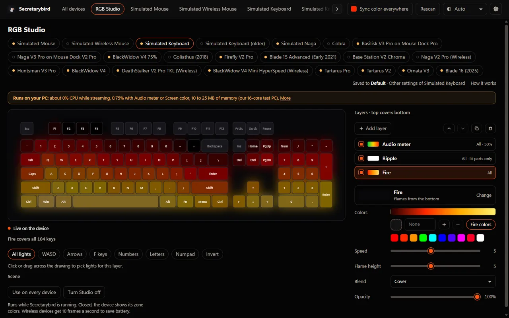
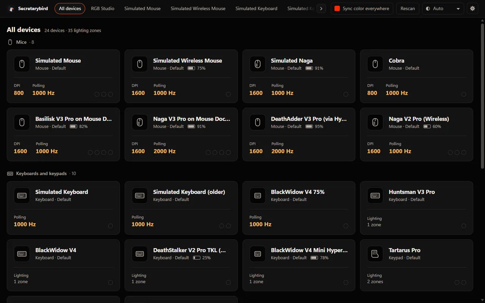
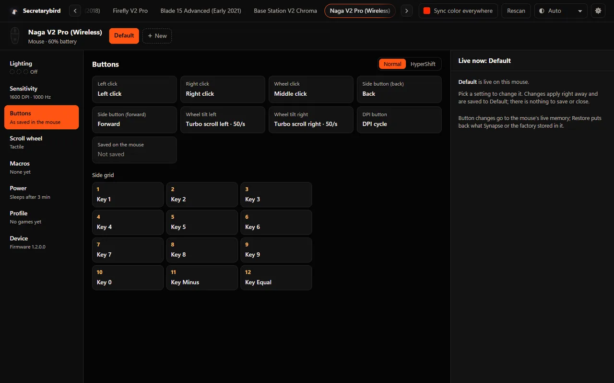
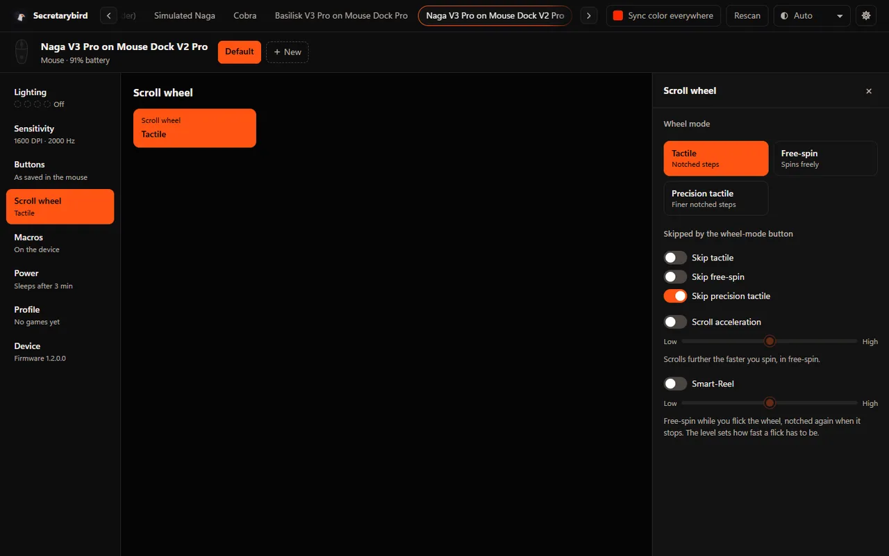
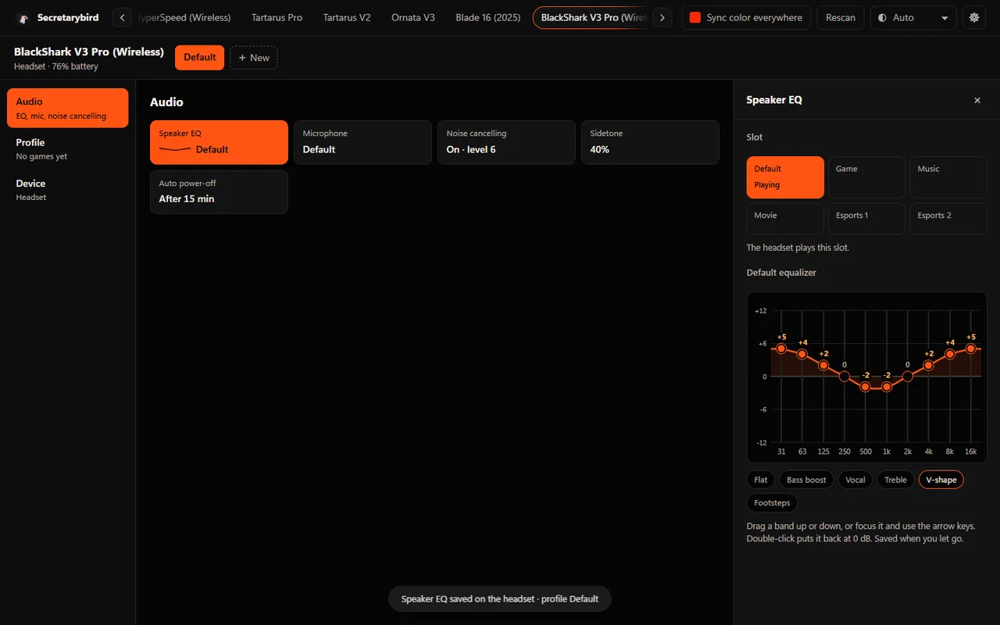

Secretarybird
Your Razer gear, minus the bloat.
Download for WindowsFree · Windows 10 and 11 · 2.9 MB · version 0.6
On Linux: the command line, in beta
The project is fully open source. Read every line of code on GitHub.

Lighting, DPI, buttons and profiles. Without the rest of Synapse.
No background servicesAn optional cleanup command turns Razer's services off. Your devices keep working, and it can be undone.
No pop-ups, no adsNo account, no tracking. It only goes online to check for a new version once a day, and you can turn that off.
TinyA 1.5 MB app that uses about 13 MB of memory while it sits in the tray.
No restartsFinds your devices in about a second. Settings come back after unplugging, sleep and reboot.
New in 0.6 November 2026
LightingRGB StudioStack effects in layers: fire, ripples on each key press, starlight, rain, an audio meter that follows your music, your screen's colors. 15 effects, on any device, even on mice whose own lighting knows only a few.
MiceScroll wheelTactile, free-spin or precision. Choose which modes the wheel button cycles through, and bring back the one Synapse quietly turned off. Smart-Reel and acceleration too.
HeadsetsBlackShark V3 ProEqualizer you drag band by band, microphone EQ, noise cancelling, sidetone and battery. Saved in your profiles like everything else.
One editor for every device




Things Synapse won't do
Run on LinuxThe command line works on any x86_64 distribution: DPI, lighting, remaps, macros, profiles.
Compare profilesEvery profile of a device side by side, editable in place. Games switch profiles on their own.
Plain filesYour settings are one readable file. Back it up, or copy it to another PC.
Script itEverything the editor does, the
secbird command does too.Install in a minute
- Click "Download for Windows" above.On the page that opens, click Secretarybird-Setup-….exe.
- Run the file you downloaded.If Windows says "Windows protected your PC", click More info, then Run anyway. This appears because the app is new and not code-signed yet; it doesn't mean it found a problem.
- Click Next until it's done.No administrator password needed. Close Razer Synapse if it's running, so the two don't fight over your settings.
- Click the bird in the taskbar tray(near the clock; click ^ if it's hidden) and choose Open editor.
Help us test it. It's a beta. Over fifteen Razer devices are confirmed working so far, from Naga, DeathAdder and Basilisk mice to BlackWidow and Huntsman keyboards, a Tartarus keypad and a BlackShark headset (see the list). Others should work but haven't been tried yet.
If you try it, tell us how it went, working or not. It takes two minutes and helps us a lot.
Report how your device worksWrite code? New devices are mostly a line of data, and pull requests are welcome: start with the contributor guide.